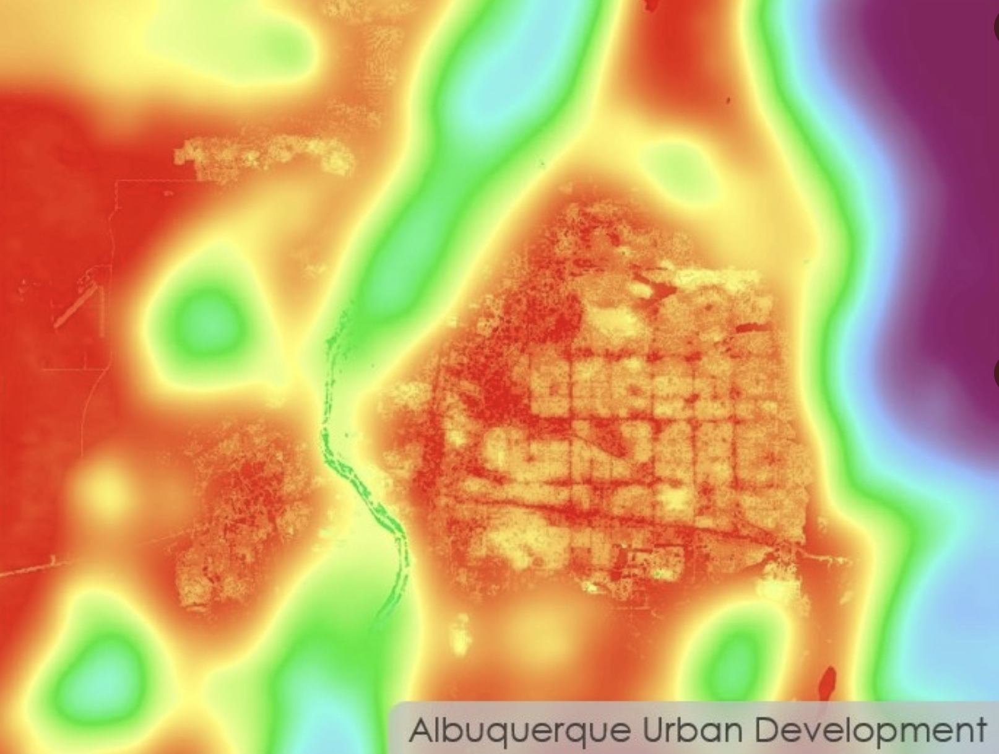

In the summer of 2022, I was a participant in the NASA DEVELOP program (find more information here), where my team and I used NASA earth observations to help the City of Albuquerque with their tree planting initiative to reduce urban heat. I was the main contributer to the modelling aspect, mainly using the InVEST Urban Cooling Model (more info on that here). I also made many of the maps for the project, including the ones on this poster showing the cooling capacity of areas in Albuquerque.
I was selected as the team representative to present our poster at NASA headquarters in D.C. at the end of the program.
I also put together our website image for the design challenge. The image shows a heat mitigation index result from running the InVEST model.
